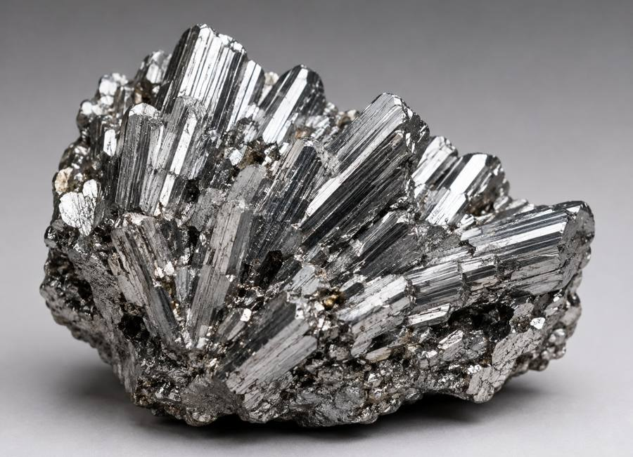

Propriedades fundamentais
01 Principais características
Prateado e brilhante
Semimetal
15
121,76 u
Sb

O antimônio é um semimetal de número atômico 51. Em temperatura ambiente ele é sólido, tem cor prateada e brilho metálico. Também é quebradiço e conduz pouco calor e eletricidade. Na natureza, costuma aparecer ligado a outros elementos, principalmente ao enxofre.
Fonte: CRQ-SP - Antimônio (2024).
Descoberta histórica
02 História da descoberta
Antiguidade
O antimônio é conhecido desde a Antiguidade, por isso não existe uma data exata para sua descoberta. Civilizações antigas, como a egípcia, já usavam compostos de antimônio em cosméticos, principalmente no kohl, usado nos olhos.
Estibinita
O mineral estibinita também já era conhecido e usado há muito tempo. Também não se sabe com certeza quando o antimônio metálico foi isolado pela primeira vez.
Origem do símbolo
O símbolo Sb vem do nome histórico stibium.
Fonte: CRQ-SP - Antimônio (2024).
Ocorrência natural
03 Ocorrência na natureza
O antimônio quase nunca é encontrado puro. Ele aparece em pequenas quantidades em vários minerais, geralmente combinado com enxofre e outros metais.
Sb2S3
Estibinita
Principal minério usado para obter antimônio. É formada principalmente por antimônio e enxofre.
- Mais de cem minerais: o elemento aparece em pequenas quantidades neles, segundo o CRQ-SP.
- Companheiros comuns: costuma ocorrer junto com enxofre e metais como chumbo, cobre e prata.
- Raramente puro: quase nunca é encontrado na forma isolada.
Fontes: CRQ-SP (2024) e Universidade de São Paulo - USP (2023).
Aplicações
04 Uso no cotidiano
Baterias
O antimônio é usado junto com o chumbo em algumas baterias. Ele ajuda a deixar a liga mais resistente e durável.
Retardantes de chama
O trióxido de antimônio é usado em materiais que dificultam a propagação do fogo, como alguns plásticos, tecidos e borrachas.
Tecnologia e saúde
O antimônio aparece em semicondutores e em materiais estudados para aplicações fotônicas. Alguns de seus compostos também são usados em medicamentos.
Fontes: CRQ-SP (2024) e Universidade de São Paulo - USP (2023).
Importância e riscos
05 Importância e riscos
O antimônio tem importância na indústria porque é usado em baterias, ligas metálicas, retardantes de chama e materiais tecnológicos. Alguns compostos também têm uso na área da saúde.
Aviso de segurança
A exposição a quantidades maiores de antimônio e de alguns de seus compostos pode trazer riscos. A CETESB informa que a toxicidade depende da forma química e da quantidade de exposição, e que alguns sais podem irritar a pele, os olhos e as mucosas.
O elemento também pode chegar ao ambiente por atividades como mineração, fundição, queima de carvão e incineração de resíduos. Por isso, seu uso e descarte precisam de controle e cuidados adequados.
Resumo rápido
Usado em vários produtos industriais.
Pode ser liberado por mineração e processos industriais.
Algumas formas do antimônio são tóxicas e podem causar irritação e outros efeitos em exposições maiores.
O manuseio deve seguir medidas de segurança e o descarte não deve ser feito de qualquer forma.
Referências
06 Fontes consultadas
- Conselho Regional de Química de São Paulo (CRQ-SP) - “Antimônio” (2024).
- CETESB - “Antimônio: Ficha de Informação Toxicológica” (atualizada em 2024).
- Universidade de São Paulo (USP) - “Desenvolvimento de Novos Materiais Fotônicos baseados em Antimonatos...” (2023).
Quem fez o projeto
07 Equipe

Professor
Alan
PW IIResponsável por organizar e auxiliar o desenvolvimento do projeto.

Professora
Elaine
QuímicaResponsável pela organização e atribuição do elemento químico apresentado no site.
Aluno
Matheus Mendes
Nº 27 · 2º DS BResponsável pelo desenvolvimento do projeto e pela pesquisa das informações do elemento químico.
@xstheuz